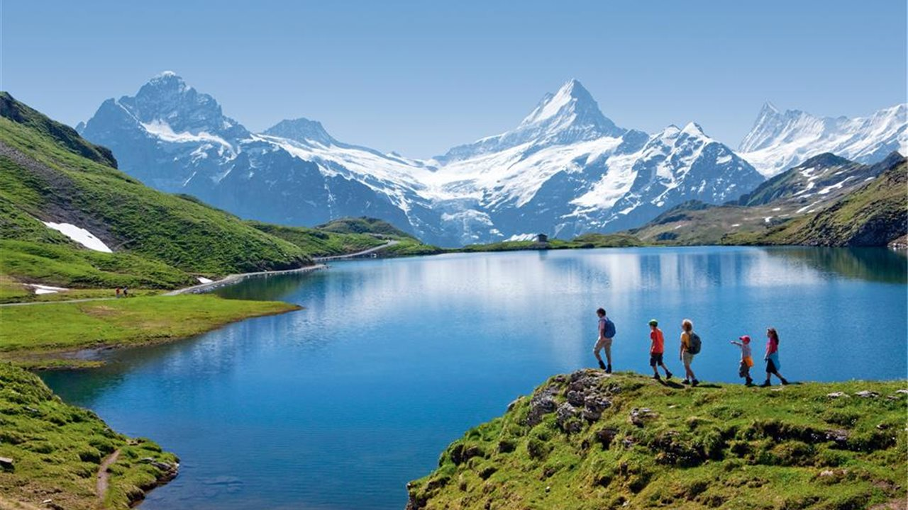
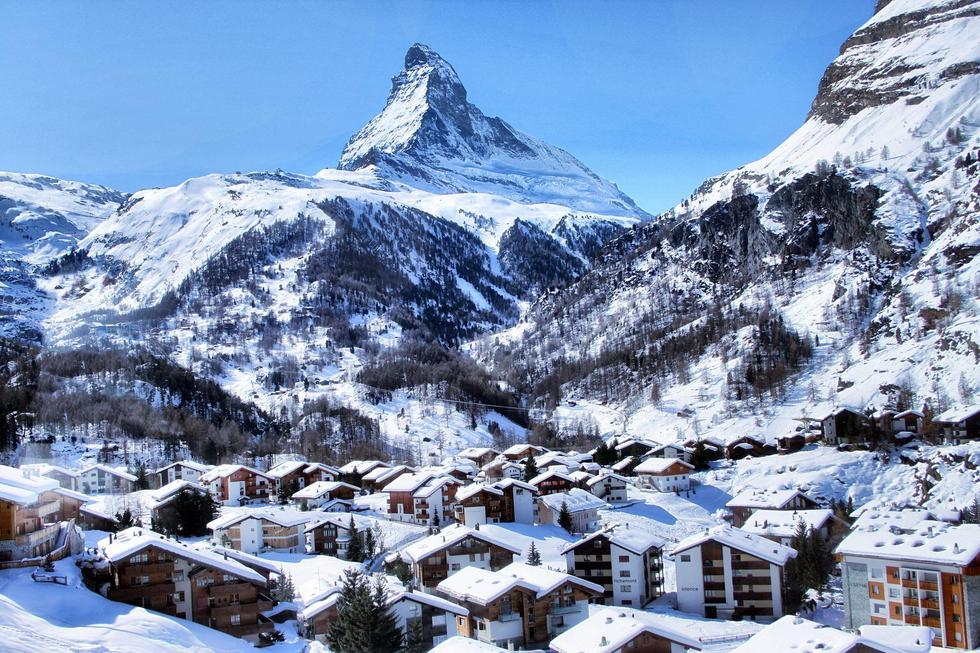
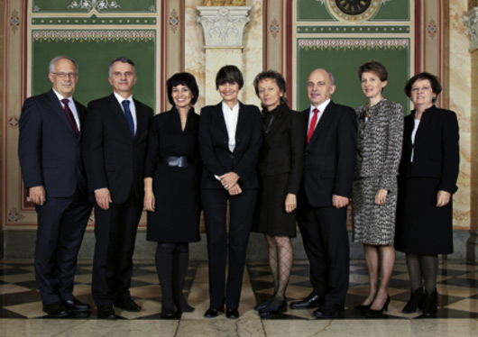

Contexto
Suiza, es un país ubicado en el centro de Europa, rodeado por Alemania, Austria, Liechtenstein, Italia y Francia. Rodeada de montes nevados y atravesada por llanuras y valles, Suiza presenta una variedad de paisajes que deleitan a los viajeros. Su población es también uno de sus grandes atractivos: en la pequeña Suiza confluyen múltiples comunidades idiomáticas y religiosas, convirtiendo al multiculturalismo y la tolerancia uno de los pilares de este país. El país está dividido en 26 cantones con gran autonomía y una identidad propia que se refleja en cada una de sus localidades.

Geografia
Suiza es un país eminentemente montañoso, cuyas cordilleras se alinean en sentido suroeste-noreste. La principal de ellas, los Alpes, cruzan toda la zona sur del país, ocupando el 62,5% de la superficie suiza y llega a su punto máximo en el Monte Rosa (4.636 m). A lo largo de la frontera oeste con Francia se encuentra la cordillera del Jura, de menor altura que los Alpes. Entre ambas cadenas se encuentra el Mittelland, un corredor de llanuras que cruza el país y donde se ubican las principales ciudades de éste.
Múltiples lagos y ríos destacan en la superficie de Suiza, que forman parte en su mayoría de tres de las principales cuencas hidrográficas europeas: la del río Ródano (al suroeste del país), la del Rin (al norte) y la del Po (en el extremo sur). Dentro de los lagos, los tres más grandes son el Lemán, el de Constanza y el Mayor; los tres son compartidos con los países vecinos.

Gobierno
Suiza es un Estado federal, compuesto por 26 cantones. Su organización está basada en la Constitución promulgada en 1848 y que ha sido modificada sucesivas veces, estableciendo una separación de poderes como una república tradicional. Sin embargo, el Poder Ejecutivo tiene varias diferencias respecto a lo que ocurre en la mayoría de los países: existe un Consejo Federal de 7 miembros que duran 4 años cada uno y que actúa como Jefe de Estado de forma colectiva. No existe un “Presidente” de Suiza, existiendo únicamente un Presidente del Consejo rotativo y sin poderes adicionales respecto a los otros consejeros.
